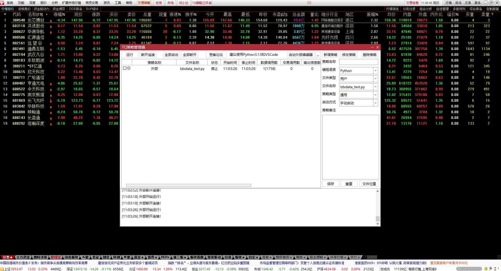
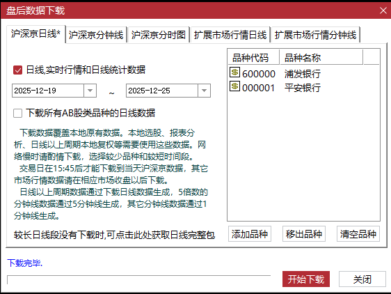
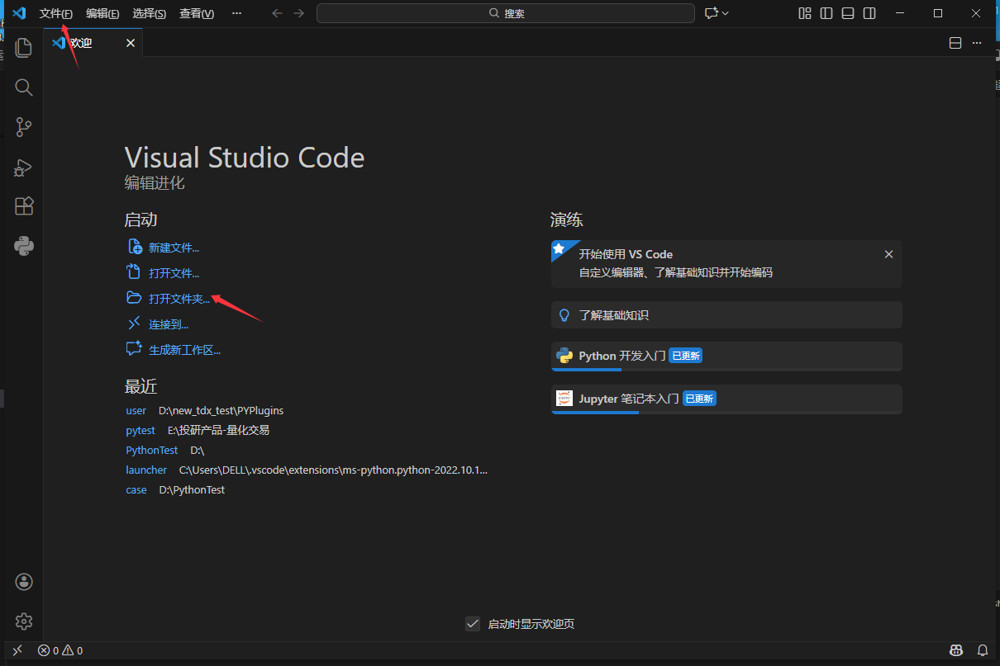
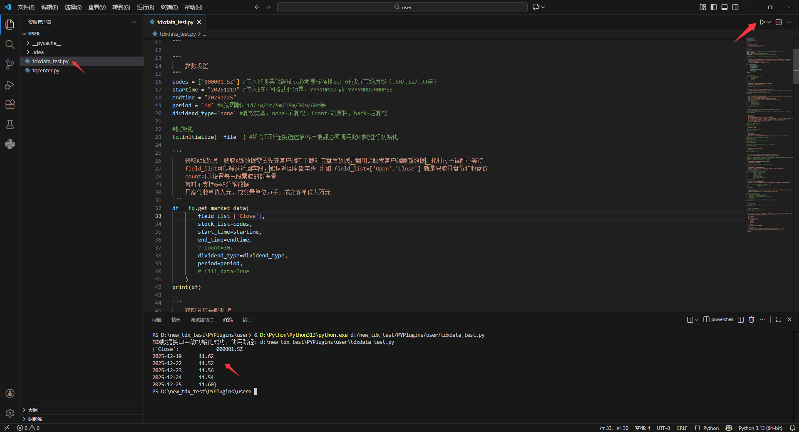
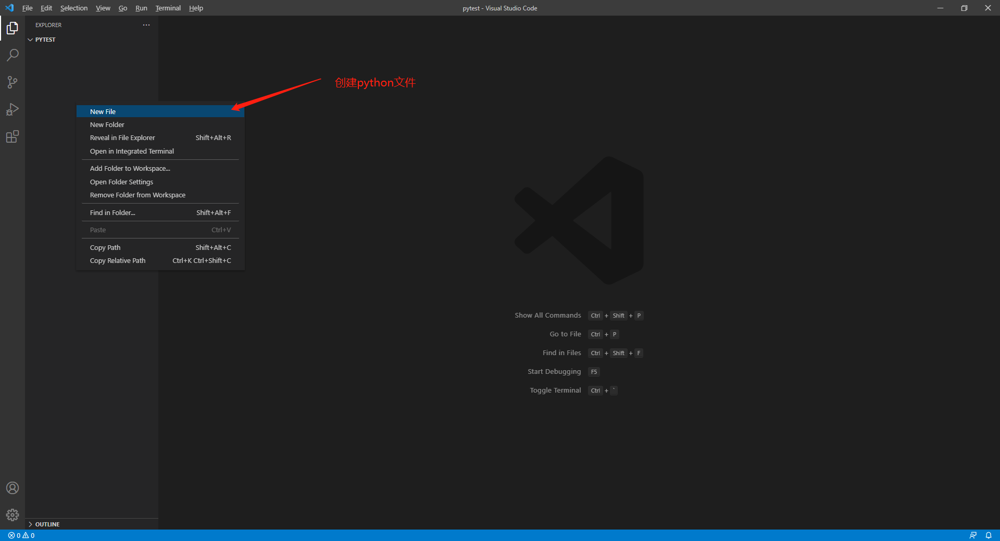
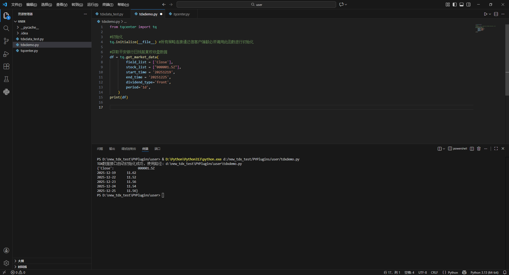

# 1. 安装通达信终端
# 1.1 下载地址
内测版下载入口： 通达信金融终端内测版 (opens new window)
量化模拟下载入口： 金融终端(量化模拟) (opens new window)
正式版下载入口： 通达信金融终端64位版、通达信专业研究版 (opens new window)
# 1.2 登录通达信金融终端

# 1.3 系统-盘后数据下载
进行日线和分钟线等数据下载

# 2. 使用VSCode集成环境
# 2.1 使用VSCode运行py
# 2.1.1 打开py文件
- 在 VS Code 中点击打开一个本地文件夹，“文件”->"打开文件夹"。

# 2.1.2 运行py文件
- 在VSCode中打开通达信终端目录
.../PYPlugins/user文件夹，运行tdxdata_test.py文件。

注意：客户端安装目录下面的.../PYPlugins/user文件夹中的tqcenter.py是最主要的TQData支撑文件，请勿修改或删除，否则需要重新下载。
# 2.2 使用VSCode编辑新文件
# 2.2.1 新建py文件
在打开的文件夹中鼠标右键创建新的".py" python 文件，文件名例如tdxdemo.py。

# 2.2.2 编辑py文件
# 使用tqcenter的API函数查看平安银行日线数据示例
from tqcenter import tq
#初始化
tq.initialize(__file__) #所有策略连接通达信客户端都必须调用此函数进行初始化
#获取平安银行日线前复权收盘数据
df = tq.get_market_data(
field_list = ['Close'],
stock_list = ["000001.SZ"],
start_time = '20251219',
end_time = '20251225',
dividend_type='front',
period='1d',
)
print(df)
1
2
3
4
5
6
7
8
9
10
11
12
13
14
15
16
17
18
2
3
4
5
6
7
8
9
10
11
12
13
14
15
16
17
18
- 运行结果如图：
